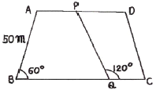
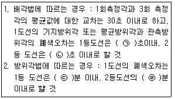
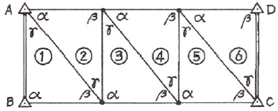
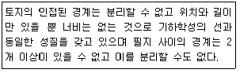
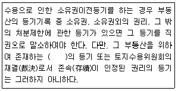

지적기사 (2016-05-08 기출문제)
1과목: 지적측량
1. 경위의측량방법에 따른 세부측량의 방법 기준으로만 나열된 것은?
- 지거법, 도선법
- 도선법, 방사법
- 방사법, 교회법
- 교회법, 지거법
(정답률: 75%)

2. 지적삼각보조점측량을 Y망으로 실시하여 1도선의 거리의 합계가 1654.15m 이었을 때, 연결오차는 최대 얼마이하로 하여야 하는가?
- 0.033083m 이하
- 0.0496245m 이하
- 0.066166m 이하
- 0.0827075m 이하
(정답률: 48%)
3. 근사조정법에 의한 삽입망 조정계산에서 기지내각에 맞도록 조정하는 것을 무슨 조정이라고 하는가?
- 망규약에 대한 조정
- 변규약에 대한 조정
- 측점규약에 대한 조정
- 삼각규약에 대한 조정
(정답률: 78%)
4. 지적확정측량 시 필지별 경계점의 기준이 되는 점이 아닌 것은?
- 수준점
- 위성기준점
- 통합기준점
- 지적삼각점
(정답률: 76%)
5. 변수가 18변인 도선을 방위각법으로 도근측량을 실시한 결과각오차가 -4분 발생하였다. 제13변에 배부할 오차는?
- 약 +2분
- 약 +3분
- 약 -2분
- 약 -3분
(정답률: 62%)
6. 다음 중 지적공부의 정리가 수반되지 않는 것은?
- 토지 분할
- 축척변경
- 신규 등록
- 경계 복원
(정답률: 56%)
7. 지적공부 작성에 대한 설명 중 도면의 작성방법에 해당되지 않는 것은?
- 직접자사법
- 간접자사법
- 정밀복사법
- 전자자동제도법
(정답률: 66%)
8. 평판측량방법에 따른 세부측량을 도선법으로 하는 경우 도선의 폐색오차를 각 점에 배분하는 방법으로 옳은 것은?
- 변의 길이에 반비례하여 배분한다.
- 변의 순서에 반비례하여 배분한다.
- 변의 길이에 비례하여 배분한다.
- 변의 순서에 비례하여 배분한다.
(정답률: 48%)
9. 축척 1/600을 축척 1/500으로 잘못 알고 면적을 계산한 결과가 2500m2이었다. 축척 1/600에서의 실제 토지 면적은?
- 2500m2
- 3000m2
- 3600m2
- 4000m2
(정답률: 58%)
10. 지적소관청이 지적삼각보조점성과를 관리할 때, 지적삼각보조점성과표에 기록ㆍ관리하여야 하는 내용으로 옳지 않은 것은?
- 번호 및 위치의 약도
- 좌표와 직각좌표계 원점명
- 도선등급 및 도선명
- 자오선수차(子午線收差)
(정답률: 72%)
11. 지적삼각보조측량의 평면거리계산에 대한 설명으로 틀린 것은?
- 기준면상 거리는 경사거리를 이용해 계산한다.
- 두 점 간의 경사거리는 현장에서 2회 측정한다.
- 원점에 투영된 평면거리에 의하여 계산한다.
- 기준면상 거리에 축척계수를 곱하여 평면거리를 계산한다.
(정답률: 53%)
12. 경위의 측량방법과 다각망도선법에 의한 지적삼각보조점의 관측 시 도선별 평균 방위각과 관측방위각의 폐색오차는 얼마 이내로 하여야 하는가? (단, 폐색변을 포함한 변의 수는 4이다.)
- ±10초 이내
- ±20초 이내
- ±30초 이내
- ±40초 이내
(정답률: 66%)
13. 반지름 1500m, 중심각이 37°14'53.6“ 인 원호상의 길이는 얼마인가?
- 약 975.155m
- 약 2501.000m
- 약 1625.260m
- 약 3250.001m
(정답률: 58%)
14. 다음 그림에서 AD//BC일 때 PQ의 길이는?

- 60m
- 50m
- 80m
- 70m
(정답률: 75%)
15. 도선법과 다각망도선법에 따른 지적도근점의 각도관측 시, 폐색오차 허용범위의 기준에 대한 설명이다. ㉠, ㉡, ㉢, ㉣에 들어갈 내용이 옳게 짝지어진 것은? (단, n은 폐색변을 포함한 변의 수를 말한다.)

- ㉠±20√n, ㉡±10√n, ㉢±√n, ㉣2±√n
- ㉠±20√n, ㉡±30√n, ㉢±√n, ㉣1.5±√n
- ㉠±10√n, ㉡±20√n, ㉢±2√n, ㉣±√n
- ㉠±30√n, ㉡±20√n, ㉢±1.5√n, ㉣±√n
(정답률: 88%)
16. 다음 그림과 같은 삼각쇄에서 기지 방위각의 오차가 +24“일 때 ③삼각형의 γ각에 얼마를 보정하여야 하는가?(오류 신고가 접수된 문제입니다. 반드시 정답과 해설을 확인하시기 바랍니다.)

- +4“
- -4“
- +12“
- -12
(정답률: 46%)
17. 축척이 1/1,200인 지역에서 800m2의 토지를 분할하고자 할 때 신구면적 오차의 허용범위는?
- 114m2
- 57m2
- 22m2
- 20m2
(정답률: 81%)
18. 다각망도선법 복합망의 관측방위각에 대한 보정수의 계산순서로 맞는 것은?
- 표준방정식→상관방정식→역해→정해→보정수계산
- 상관방적식→표준방정식→정해→역해→보정수계산
- 표준방정식→정해→역해→상관방정식→보정수계산
- 상관방정식→정해→역해→표준방정식→보정수계산
(정답률: 46%)
19. 다각망도선법으로 지적삼각보조점측량을 할 때 1도선의 거리는 최대 얼마 이하로 하여야 하는가?
- 3km
- 4km
- 5km
- 6km
(정답률: 85%)
20. 다음 중 지적삼각점성과를 관리하는 자는?
- 지적소관청
- 시ㆍ도지사
- 국토교통부장관
- 행정자치부장관
(정답률: 55%)
2과목: 응용측량
21. GNSS측량에서 DOP에 대한 설명으로 옳은 것은?
- 도플러 이동량
- 위성궤도의 결정 좌표
- 특정한 순간의 위성배치에 대한 기하학적 강도
- 위성시계와 수신기 기계의 조합으로부터 계산되는 시간오차의 표준편차
(정답률: 57%)
22. 수준측량에서 기포관의 눈금이 3눈금 움직였을 때 60m 전반에 세운 표척의 읽음차가 2.5cm인 경우 기포관의 감도는?
- 26"
- 29"
- 32"
- 35"
(정답률: 56%)
23. 노선측량의 작업순서로 옳은 것은?
- 노선선정-계획조사측량-실시설계측량-세부측량-용지측량-공사측량
- 계획조사측량-노선선정-용지측량-실시설계측량-공사측량-세부측량
- 노선선정-계획조사측량-용지측량-세부측량-실시설계측량-공사측량
- 계획조사측량-용지측량-노선성정-실시설계측량-세부측량-공사측량
(정답률: 51%)
24. 노선측량의 단곡선 설치에서 교각 I=90°, 곡선반지름 R=150m일 때 곡선거리(C.L.)는?
- 212.6m
- 216.3m
- 223.6m
- 235.6m
(정답률: 66%)
25. 터널의 준공을 위한 변형조사측량에 해당되지 않는 것은?
- 중심측량
- 고저측량
- 삼각측량
- 단면측량
(정답률: 62%)
26. 다음 중 항공삼각측량 방법이 아닌 것은?
- 다항식 조정법
- 광속조정법
- 독립모델조정법
- 보간조정법
(정답률: 62%)
27. 항공사진의 투영원리로 옳은 것은?
- 정사투영
- 중심투영
- 평행투영
- 등적투영
(정답률: 56%)
28. 다음 중 지형측량의 지성선에 해당되지 않는 것은?
- 계곡선(합수선)
- 능선(분수선)
- 경사변환선
- 주곡선
(정답률: 65%)
29. 사진의 크기가 23cm×23cm, 종중복도 70%, 횡중복도 30%일 때 촬영 종기선의 길이와 촬영 횡기선의 길이의 비(종기선 길이:횡기선길이)는?
- 2:1
- 3:7
- 4:7
- 7:3
(정답률: 71%)
30. GPS위성의 신호에 대한 설명 중 틀린 것은?
- L1반송파에는 C/A코드와 P코드가 포함되어 있다.
- L2반송파에는 C/A코드만 포함되어 있다.
- L1 반송파가 L2반송파보다 높은 주파수를 가지고 있다.
- 위성에서 송신되는 신호는 대기의 상태에 따라 전파의 속도가 달라지는 것을 보정하기 위하여 파장이 다른 2가지의 전파를 동시에 수신한다.
(정답률: 69%)
31. 수준측량에서 전ㆍ후시의 측량을 연결하기 위하여 전시, 후시를 함께 위하는 점은?
- 중간점
- 수준점
- 이기점
- 기계점
(정답률: 57%)
32. 노선측량의 완화곡선 중 차가 일정 속도로 달리고, 그 앞바퀴의 회전 속도를 일정하게 유지할 경우, 이 차가 그리는 주행 궤적을 의미하는 완화곡선으로 고속도로의 곡선설치에 많이 이용되는 곡선은?
- 3차포물선
- sin체감곡선
- 클로소이드
- 렘니스케이트
(정답률: 60%)
33. 항공사진 촬영을 위한 표정점 선점 시 유의사항으로 옳지 않은 것은?
- 표정점은 X, Y, H가 동시에 적확하게 결정될 수 있는 점이어야 한다.
- 경사가 급한 지표면이나 경사 변환선상을 택해서는 안된다.
- 상공에서 잘 보여야 하며 시간에 따라 변화가 생기지 않아야 한다.
- 헐레이션(Halation)이 발생하기 쉬운 점을 선택한다.
(정답률: 75%)
34. 지형도에서 100m등고선 상의 A점과 140m등고선 상의 B점 간을 상향 기울기 9%의 도로로 만들면 AB간 도로의 실제 경사거리는?
- 446.24m
- 448.42m
- 464.44m
- 468.24m
(정답률: 53%)
35. 수직 터널에 의하여 지상과 지하의 측량을 연결할 때의 수선측량에 대한 설명으로 틀린 것은?
- 깊은 수직 터널에 내리는 추는 50~60kg 정도의 추를 사용할 수 있다.
- 추를 드리울 때, 깊은 수직 터널에서는 보통 피아노선이 이용된다.
- 수직터널 밑에는 물이나 기름을 담은 물통을 설치하고 내린 추가 그 물통 속에서 동요하지 않게 한다.
- 수직터널 밑에서 수선의 위치를 결정하는 데는 수선이 완전히 정지하는 것을 기다린 후 1회 관측값으로 결정한다.
(정답률: 65%)
36. 수치사진측량에서 영상정합(image matching)에 대한 설명으로 틀린 것은?
- 지역통과필터를 이용하여 영상을 여과한다.
- 하나의 영상에서 정합요소로 점이나 특징을 선택한다.
- 수치표고모델 생성이나 항공삼각측량의 점이사를 위해 적용한다.
- 대상공간에서 정합된 요소의 3차원 위치를 계산한다.
(정답률: 36%)
37. 수준측량에서 발생하는 오차 중 정오차인 것은?
- 표척을 잘못 읽어 생기는 오차
- 태양의 직사광선에 의한 오차
- 지구곡률에 의한 오차
- 시차에 의한 오차
(정답률: 68%)
38. 다음 중 원격탐사(Remote Sensing)의 정의로 가장 적합한 것은?
- 센서를 이용하여 지표의 대상물에서 반사 또는 방사된 전자스펙트럼을 측정하여 대상물에 대한 정보를 얻는 기법
- 지상에서 대상물체에 전파를 발생시켜 그 반사파를 이용하여 측정하는 기법
- 우주에 산재하여 있는 물체들의 고유 스펙트럼을 이용하여 각각의 구성성분으로 지상의 레이더망으로 수집하여 얻는 기법
- 우주선에서 찍은 중복된 사진을 이용하여 지상에서 항공사진의 처리와 같은 방법으로 판독하는 기법
(정답률: 69%)
39. 곡선반지름 R=2500m, 캔트(cant)100mm인 철도 선로를 설계할 때, 적합한 설계 속도는? (단, 레일 간격은 1m로 가정한다.)
- 50km/h
- 60km/h
- 150km/h
- 178km/h
(정답률: 37%)
40. 등고선 내의 면적이 저면부터 A1=380m2, A2=350m2, A3=300m2, A4=100m2, A5=50m2일 때 전체 토량은?(단, 등고선 간격은 5m이고 상단은 평평한 것으로 가정하며 각주공식에 의한다.)
- 2950m3
- 4717m3
- 4767m3
- 5900m3
(정답률: 51%)
3과목: 토지정보체계론
41. 크기가 다른 정사각형을 이용하며, 공간을 4개의 동일한 면적으로 분할하는 작업을 하나의 속성값이 존재할 때까지 반복하는 래스터자료 압축 방법은?
- 런렝스코드(Run-Lenght code)기법
- 체인코드(Chain code)기법
- 블록코드(Blok code)기법
- 사지수형(Quadtree)기법
(정답률: 65%)
42. 스파게티(Spageti)모형에 대한 설명으로 옳지 않은 것은?
- 자료구조가 단순하여 파일의 용량이 작다.
- 하나의 점(X, Y좌표)을 기본으로 하고 있어 구조가 간단하므로 이해하기 쉽다.
- 객체들 간의 공간 관계에 대한 정보가 입력되므로 공간분석에 효율적이다.
- 상호 연관성에 관한 정보가 없어 인접한 객체들의 특징과 관련성을 파악하기 힘들다.
(정답률: 54%)
43. 다음 중 지적정보센터자료가 아닌 것은?
- 시설물관리전산자료
- 지적전산자료
- 주민등록전산자료
- 개별공시지가전산자료
(정답률: 40%)
44. 사용자가 데이터베이스에 접근하여 데이터를 처리할 수 있도록 하는 것으로 데이터의 검색, 삽입, 삭제 및 갱신 등과 같은 조작을 하는데 사용하는 데이터 언어는?
- DDL(Data Definition Language)
- DML(Data Manipulation Language)
- DCL(Data Control Language)
- DDL(Data Link Language)
(정답률: 62%)
45. 다음 중 GIS데이터의 표준화에 해당하지 않는 것은?
- 데이터 모델(Data Model)의 표준화
- 데이터 내용(Data Contents)의 표준화
- 데이터제공(Data Supply)의 표준화
- 위치참조(Location Reference)의 표준화
(정답률: 52%)
46. 일선 시ㆍ군ㆍ구에서 사용하는 지적행정시스템의 통합업무관리에서 지적공부 오기정정 메뉴가 아닌 것은?(오류 신고가 접수된 문제입니다. 반드시 정답과 해설을 확인하시기 바랍니다.)
- 토지/임야 기본 정정
- 토지/임야 연혁 정정
- 집합건물 소유권 정정
- 대지권 등록부 정정
(정답률: 21%)
47. 토지정보체계의 자료구축에 있어서 표준화의 필요성과 가장 관련이 적은 것은?
- 지료의 중복구축 방지로 비용을 절감할 수 있다.
- 자료구조의 단순화를 목적으로 한다.
- 기존에 구축된 모든 데이터에 쉽게 접근할 수 있다.
- 시스템 간의 상호연계성을 강화할 수 있다.
(정답률: 48%)
48. 다음 중 데이터베이스의 도형자료에 해당하는 것은?
- 선
- 도면
- 통계자료
- 토지대장
(정답률: 56%)
49. 공간객체를 색인화(Indexing)하기 위해 사용하는 방법이 아닌 것은?
- 그리드 색인화
- R-Tree색인화
- 피타고라스 색인화
- 사지수형 색인화
(정답률: 64%)
50. 국가지리정보체계(NGIS)추진위원회의 심의사항이 아닌 것은?
- 기본계획의 수립 및 변경
- 기본지리정보의 선정
- 지리정보의 유통과 보호에 관한 주요사항
- 추진실적의 관리 및 감독
(정답률: 49%)
51. 토지의 고유번호에서 행정구역 코드의 자리 구성이 옳지 않은 것은?
- 시ㆍ도-2자리
- 리-2자리
- 읍ㆍ면ㆍ동-2자리
- 시ㆍ군ㆍ구-3자리
(정답률: 66%)
52. 다음 중 우리나라의 지적측량에서 사용하는 직각좌표계의 투영법 기준으로 옳은 것은?
- 방위도법
- 정사투영법
- 가우스상사이중투영법
- 원추투영법
(정답률: 76%)
53. 다음 중 토지정보시스템의 주된 구성요소로만 나열한 것은?
- 조직과 인력, 하드웨어 및 소프트웨어, 자료
- 하드웨어 및 소프트웨어, 통신장비, 네트워크
- 자료, 보안장치, 시설
- 지적측량, 조직과 인력, 네트워크
(정답률: 78%)
54. 다음 중 격자구조의 압축 방법에 해당하지 않는 것은?
- Run-Length code
- Block code
- Chain code
- Spaghetti code
(정답률: 75%)
55. 다음 공간정보의 형태에 대한 설명 중 옳지 않은 것은?
- 점은 위치 좌표계의 단 하나의 쌍으로 표현되는 대상이다.
- 선은 점이 연결되어 만들어지는 집합이다.
- 면적은 공간적 대상물의 범주로 간주되며 연속적인 자료의 표현이다.
- 면적은 분리된 단위를 형성하는 것에 가까운 점 분할의 집합이다.
(정답률: 64%)
56. 다음 중 래스터 구조에 비하여 벡터 구조가 갖는 장점으로 옳지 않은 것은?
- 복잡한 현실세계의 묘사가 가능하다.
- 위상에 관한 정보가 제공된다.
- 지도를 확대하여도 형상이 변하지 않는다.
- 시뮬레이션이 용이하다.
(정답률: 56%)
57. 다음 중 관계형 DBMS의 질의어는?
- SQL
- DLL
- DLG
- COGO
(정답률: 77%)
58. 토지정보를 제공하는 국토정보가 처음 구축된 년도는?
- 1987년
- 1990년
- 1994년
- 2001년
(정답률: 47%)
59. 지적전산업무의 처리, 지적전산프로그램의 관리 등 지적전산시스템의 관리ㆍ운영등에 필요한 사항을 정하는 자는?
- 교육부장관
- 행정자치부장관
- 국토교통부장관
- 산업통상자원부장관
(정답률: 75%)
60. 데이터 웨어하우스(Data Warehouse)의 설명으로 가장 적절한 것은?
- 제품의 생산을 위한 프로세스를 전산화해서 부품조달에서 생산계획, 납품, 재고관리등을 효율적으로 처리할 수 있는 공급망 관리 솔루션을 말한다.
- 기간 업무 시스템에서 추출되어 새로이 생성된 데이터베이스로서 의사결정지원시스템을 지원하는 주체적, 통합적, 시간적 데이터의 집합체를 말한다.
- 데이터 수집이나 보고를 위해 작성된 각종양식, 보고서관리, 문서보관등 여러 형태의 문서관리를 수행한다.
- 대량의 데이터로부터 각종 기법 등을 이용하여 숨겨져 있는 데이터 간의 상호 관련성, 패턴, 경향 등의 유용한 정보를 추출하여 의사 결정에 적용한다.
(정답률: 46%)
4과목: 지적학
61. 다음 중 지적형식주의에 대한 설명으로 옳은 것은?
- 지적공부등록 시 효력발생
- 토지이동처리의 형식적 심사
- 공시의 원칙
- 토지표시의 결재형식으로 결정
(정답률: 58%)
62. 조선지세령에 관한 내용으로 틀린 것은?
- 1943년에 공포되어 시행되었다.
- 전문 7장과 부칙을 포함한 95개 조문으로 되어 있다.
- 토지대장, 지적도, 임야대장에 관한 모든 규칙을 통합하였다.
- 우리나라 세금의 대부분인 지세에 관한 사항을 규정하는 것이 주목적이었다.
(정답률: 62%)
63. 다음 중 망척제와 관계가 없는 것은?
- 이기(李沂)
- 해학유서(海鶴遺書)
- 牧民心書
- 면적을 산출하는 방법
(정답률: 67%)
64. 다음 중 임야조사사업 당시의 조사 및 측량 기관은?
- 부(部)나 면(面)
- 임야심사위원회
- 임시토지조사국장
- 도지사
(정답률: 60%)
65. 토렌스시스템은 오스트레일리아의 Robert Torrens경에 의해 창안된 시스템으로서, 토지권리 등록법안의 기초가 된다. 다음 중 토렌스시스템의 주요이론에 해당되지 않는 것은?
- 거울이론
- 커튼이론
- 보험이론
- 권원이론
(정답률: 73%)
66. 다음 중 자한도(字限圖)에 대한 설명으로 옳은 것은?
- 조선시대의 지적도
- 중국 원나라 시대의 지적도
- 일본의 지적도
- 중국 청나라 시대의 지적도
(정답률: 57%)
67. 아래에서 설명하는 경계결정의 원칙은?

- 축척종대의 원칙
- 경계불가분의 원칙
- 강계선 결정의 원칙
- 지역선 결정의 원칙
(정답률: 81%)
68. 다음 중 지번의 특성에 해당되지 않는 것은?
- 토지의 특정화
- 토지의 가격화
- 토지의 위치 추측
- 토지의 실별
(정답률: 71%)
69. 다음 중 지목을 설정하는 가장 주된 기준은?
- 토지의 자연상태
- 토지의 주된 용도
- 토지의 수익성
- 토양의 성질
(정답률: 83%)
70. 임야조사사업의 목적에 해당하지 않는 것은?
- 소유권을 법적으로 확정
- 임야정책 및 산업건설의 기초자료 제공
- 지세부담의 균형 조정
- 지방재정의 기초 확립
(정답률: 42%)
71. 토지의 이익에 영향을 미치는 문서의 공적등기를 보전하는 것을 주된 목적으로 하는 등록제도는?
- 날인증서 등록제도
- 권원 등록제도
- 적극적 등록제도
- 소극적 등록제도
(정답률: 43%)
72. 특별한 기준을 두지 않고 당사자의 신청순서에 따라 토지등록부를 편성하는 방법은?
- 물적 편성주의
- 인적 편성주의
- 연대적 편성주의
- 인적ㆍ물적 편성주의
(정답률: 60%)
73. 현재의 토지대장과 가장 유사한 것은?
- 양전(量田)
- 양안(量案)
- 지계(地契)
- 사표(四標)
(정답률: 71%)
74. 토지조사사업 당시 사정(査定)은 토지조사부 및 지적도에 의하여 토지의 소유자 및 그 강계를 확정하는 행정처분을 말한다. 이 때 시정권자는 누구인가?
- 조선총독부
- 측량국장
- 지적국장
- 임시토지조사국장
(정답률: 75%)
75. 지적공부의 등본 교부와 관계가 가장 깊은 것은?
- 지적공개주의
- 지적형식주의
- 지적국정주의
- 지적비밀주의
(정답률: 59%)
76. 다음 중 적극적 등록제도(positive system)에 대한 설명으로 옳지 않은 것은?
- 거래행위에 따른 토지등록은 사유재산 양도증서의 작성과 거래증서의 등록으로 구분된다.
- 적극적 등록제도에서의 토지등록은 일필지의 개념으로 법적인 권리보장이 인정된다.
- 적극적 등록제도의 발달된 형태로 유명한 것은 토렌스시스템(Torrens system)이 있다.
- 지적공부에 등록되지 아니한 토지는 그 토지에 대한 어떠한 권리도 인정되지 않는다는 이론이 지배적이다.
(정답률: 52%)
77. 스위스, 네덜란드에서 채택하고 있는 지번 표기의 유형으로 지번의 완전한 변경 내용을 알 수 있는 보조장부의 보존이 필요한 것은?
- 순차식 지번제도
- 자유식 지번제도
- 분수식 지번제도
- 복합식 지번제도
(정답률: 62%)
78. 양전(量田)개정론자와 그와 주장한 저서로 바르게 연결되지 않은 것은?
- 정약용-목민심서
- 이기-해학유서
- 서유구-의상경계책
- 김정호-동국여지도
(정답률: 62%)
79. 토지조사사업의 특징으로 틀린 것은?
- 근대적 토지제도가 확립되었다.
- 사업의 조사, 준비, 홍보에 철저를 기하였다.
- 역둔토 등을 사유화하여 토지소유권을 인정하였다.
- 도로, 하천, 구거 등을 토지조사사업에서 제외 하였다.
(정답률: 64%)
80. 다음 중 토지조사사업 당시 비과세지에 해당되지 않는 것은?
- 도로
- 구거
- 성첩
- 분묘지
(정답률: 52%)
5과목: 지적관계법규
81. 국토의 계획 및 이용에 관한 법률에서 용도지구의 지정에 관한 설명으로 틀린 것은?
- 미관지구:미관을 유지하기 위하여 필요한 지구
- 경관지구:경관을 보호ㆍ형성하기 위하여 필요한 지구
- 시설보호지구:문화재, 중요 시설물의 보호와 보존을 위하여 필요한 지구
- 방재지구:풍수해, 산사태, 지반의 붕괴, 그 밖의 재해를 예방하기 위하여 필요한 지구
(정답률: 47%)
82. 지적소관청이 토지의 이동에 따라 지적공부를 정리해야 할 경우 작성하는 행정서류는?
- 손실보상합의 결정서
- 결번대장정리 조사서
- 토지이동정리 경의서
- 지적측량적부 의결서
(정답률: 77%)
83. 공간정보의 구축 및 관리 등에 관한 법률상 양벌규저의 해당 행위가 아닌 것은? (단, 법인 또는 개인이 그 위반행위를 방지하기 위하여 해당 업무에 관하여 상당한 주의와 감독을 게을리하지 아니한 경우는 고려하지 않는다.)
- 고의로 측량성과 또는 수로조사성과를 사실과 다르게 한 자
- 둘 이상의 측량업자에게 소속된 측량기술자 또는 수로기술자
- 지계 존속ㆍ비속이 소유한 토지에 대한 지적측량을 한 자
- 측량업자나 수로사업자로서 속임수, 위력(威力), 그 밖의 방법으로 측량업 또는 수로사업과 관련된 입차의 공정성을 해친 자
(정답률: 54%)
84. 공간정보의 구축 및 관리 등에 관한 법률에 따라 토지이용상 불합리한 지상 경계를 시정하기 위해 토지이동 신청을 할 수 있는 경우로 옳은 것은?
- 분할 신청
- 등록전환 신청
- 지목변경 신청
- 등록사항정정 신청
(정답률: 38%)
85. 공간정보의 구축 및 관리 등에 관한 법률상 지적공부 등록사항의 정정에 대한 내용으로 틀린 것은?(오류 신고가 접수된 문제입니다. 반드시 정답과 해설을 확인하시기 바랍니다.)
- 등록사항의 정정이 토지소유자에 관한 사항일 경우 지적공부등본에 의하여야 한다.
- 토지소유자는 지적공부의 등록사항에 잘못이 있음을 발견하면 지적소관청에 그 정정을 신청할 수 있다.
- 토지소유자는 지적공부의 등록사항에 잘못이 있음을 발견하면 대통령령으로 정하는 바에 따라 직권으로 조사ㆍ측량하여 정정할 수 있다.
- 등록사항의 정정으로 인접 토지의 경계가 변경 되는 경우 그 정정은 인접 토지소유자의 승낙서가 제출되어야 한다.(토지소유자가 승낙하지 아니하는 경우는 이에 대항할 수 있는 확정판결서 정본을 제출한다.)
(정답률: 37%)
86. 축척변경 시행지역의 토지는 어느 때에 토지의 이동이 있는 것으로 보는가?
- 청산금 산출일
- 청산금 납부일
- 축척변경 승인 공고일
- 축척변경 확정공고일
(정답률: 62%)
87. 중앙지적위원회의 심의ㆍ의결사항이 아닌 것은?
- 지적측량기술의 연구ㆍ개발 및 보급에 관한 사항
- 지적 관련 정책 및 업무 개선 등에 관한 사항
- 지적소관청이 회부하는 청산금의 이의신청에 관한 사항
- 지적기술자의 업무정지 처분 및 정계요구에 관한 사항
(정답률: 57%)
88. 바다로 된 토지의 등록말소 및 회복에 대한 설명으로 틀린 것은?
- 등록말소 및 회복에 관한 사항으로 토지소유자의 동의 없이는 불가능하다.
- 지적소관청을 회복등록을 하려면 그 지적측량성과 및 등록말소 당시의 지적공부등 관계자료에 따라야 한다.
- 토지소유자가 등록말소 신청을 하지 아니하면 지적소관청이 직권으로 그 지적공부의 등록사항을 말소하여야 한다.
- 지적공부의 등록사항을 말소하거나 회복등록하였을 때에는 그 정리 결과를 토지소유자 및 해당 공유수면의 관리청에 통지하여야 한다.
(정답률: 62%)
89. 토지의이동사항 중 신청기산이 다른 하나는?
- 등록전환신청
- 지목변경신청
- 신규등록신청
- 바다로 된 토지의 등록말소신청
(정답률: 66%)
90. 공간정보의 구축 및 관리 등에 관한 법률상도시개발사업에 관련한 토지의 이동을 언제 이루어졌다고 보는가?
- 공사가 발주된 때
- 공사가 허가난 때
- 공사가 착공된 때
- 공사가 준공된 때
(정답률: 74%)
91. 특별시ㆍ광역시ㆍ특별자치시ㆍ특별자치도ㆍ시 또는 군의 개발ㆍ정비 및 보전을 위하여 수립하는 도시ㆍ군관리계획에 포함되지 않는 것은?
- 도시개발사업이나 정비사업에 관한 계획
- 기반시설의 설치ㆍ정비 또는 개량에 관한 계획
- 용도지역ㆍ용도지구의 지정 또는 변경에 관한 계획
- 기본적인 공간구조와 장기발전방향을 제시하는 종합계획
(정답률: 67%)
92. 다음 중 사용자권한 등록관리청에 해당하지 않는 것은?
- 지적소관청
- 시ㆍ도지사
- 국토교통부장관
- 국토지리정보원장
(정답률: 70%)
93. 부동산등기법의 수용으로 인한 등기에 관한 내용이다. ()안에 들어갈 내용으로 옳은 것은?

- 소유권
- 지역권
- 지상권
- 저당권
(정답률: 34%)
94. 공간정보의 구축 및 관리 등에 관한 법령상 지적공부의 복구자료가 아닌 것은?
- 측량결과도
- 토지이동정리 결의서
- 토지이용계획 확인서
- 법원의 확정판결서 정보 또는 사본
(정답률: 61%)
95. 다음 중 지적측량을 실시하여야 하는 경우가 아닌 것은?
- 토지를 합병하는 경우로서 필요한 경우
- 토지를 등록전환하는 경우로서 필요한 경우
- 지적공부를 복구하는 경우로서 필요한 경우
- 바다로 된 토지의 등록을 말소하는 경우로서 필요한 경우
(정답률: 55%)
96. 국토의 계획 및 이용에 관한 법률상 토지거래계약의 허가를 받지 않아도 되는 토지의 면적 기준으로 옳지 않은 것은? (단, 국토교통부장관 또는 시ㆍ도지사가 허가구역을 지정할 당시 당해 지역에서의 거래실태 등에 비추어 타당하지 아니하다고 인정하여 당해 기준면적의 10퍼센트 이상 300퍼센트 이하의 범위에서 따로 정하여 공고한 경우는 고려하지 않는다.)
- 주거지역 : 180제곱미터이하
- 상업지역 : 200제곱미터이하
- 녹지지역 : 300제곱미터이하
- 공업지역 : 660제곱미터이하
(정답률: 49%)
97. 지적공부에 관한 전산자료를 이용 또는 활용 하고자 할 경우 신청서의 기재사항이 아닌 것은?
- 자료의 범위
- 자료의 제공방식
- 자료의 안전관리대책
- 자료를 편집ㆍ가공할 자의 인적사항
(정답률: 58%)
98. 도시개발사업 등이 완료됨에 따라 지적확정측량을 실시할 지역의 각 필지에 지번을 새로 부여하는 방법과 다르게 지번을 부여하는 경우는?
- 토지를 합경할 때
- 지번부여지역의 지번을 변경할 때
- 행정구역 개편에 따라 새로 지번을 부여할 때
- 축척변경 시행지역의 필지에 지번을 부여할 때
(정답률: 53%)
99. 다음 중 등기관이 토지에 관한 등기를 하였을 때 지적공부소관청에 지체 없이 그 사실을 알려야 하는 대상에 해당하지 않는 것은?
- 소유권의 보존 또는 이전
- 소유권의 등록 또는 등록정정
- 소유권의 변경 또는 정정
- 소유권의 말소 또는 말소회복
(정답률: 41%)
100. 다음 중 지목의 구분이 옳지 않은 것은?
- 고속도로의 휴게소 부지는 ‘도로’로 한다.
- 국토의 계획 및 이용에 관한 법률 등 관계 법령에 따른 택지조성공사가 준공된 토지는 ‘대’로 한다.
- 온수ㆍ약수ㆍ석유류를 일정한 장소로 운송하는 송수관ㆍ송유관 및 저장시설의 부지는 ‘광천지’로 한다.
- 제조업을 하고 있는 공장시설물의 부지는 ‘공장용지’로 한다.
(정답률: 74%)